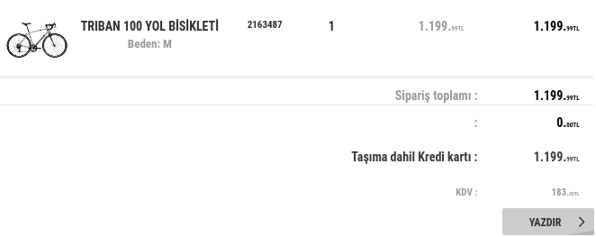
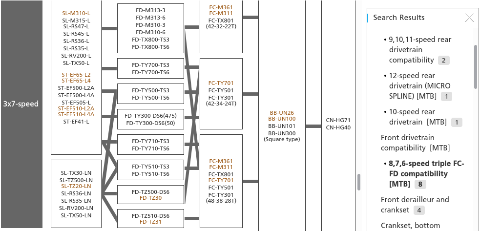
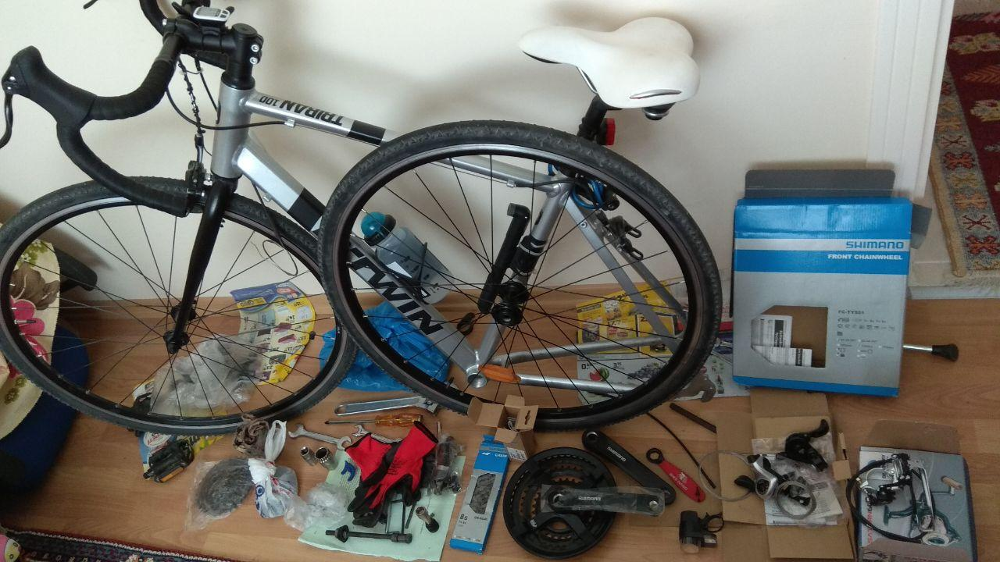
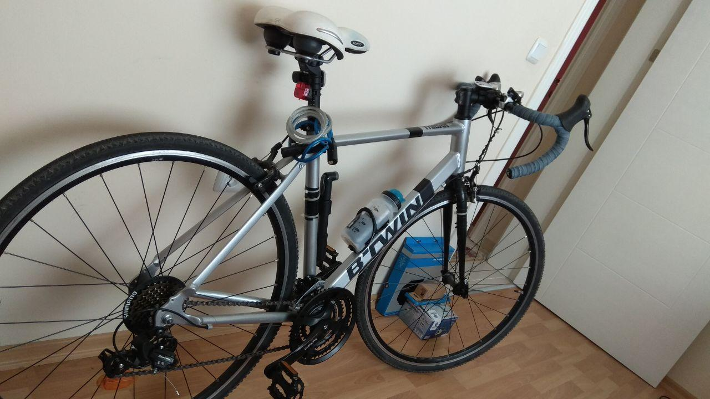
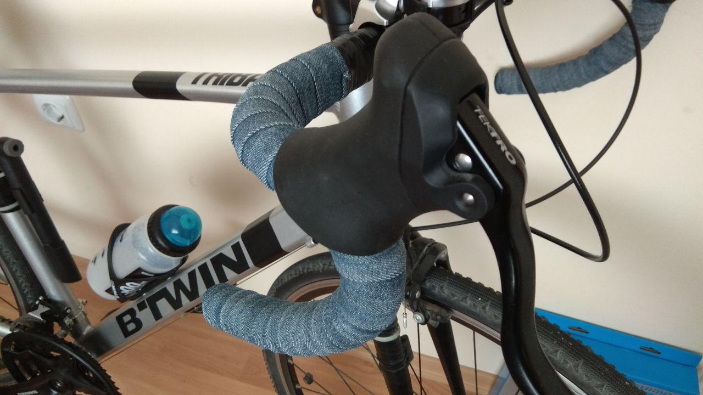
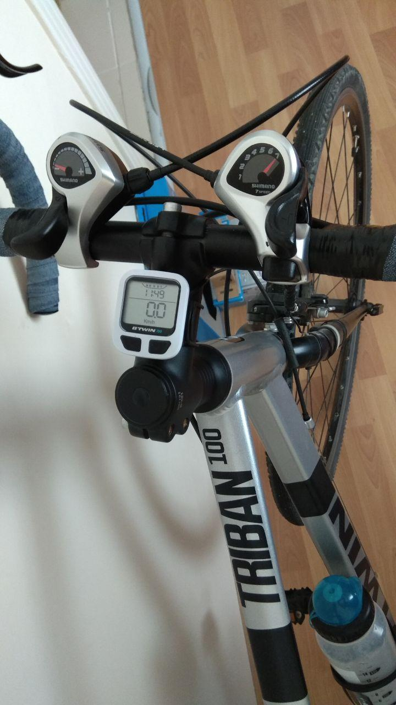
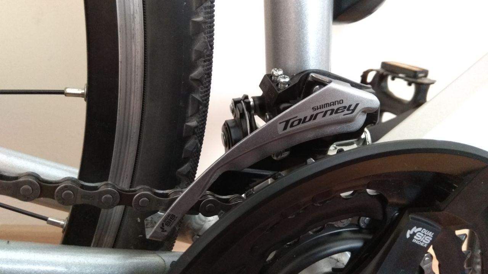
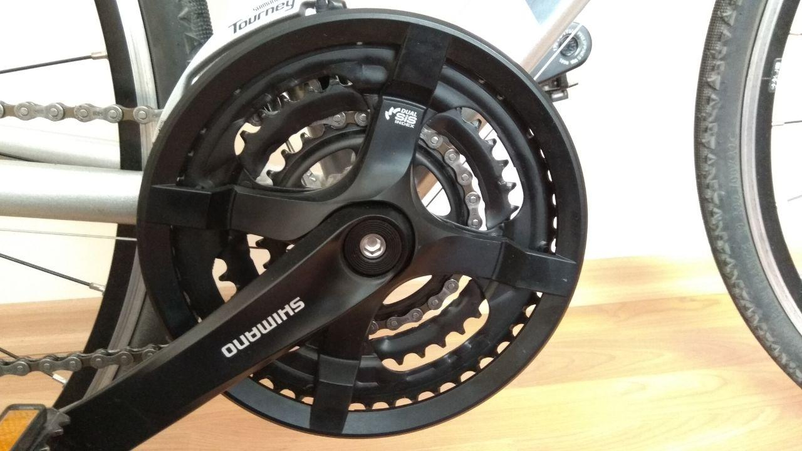
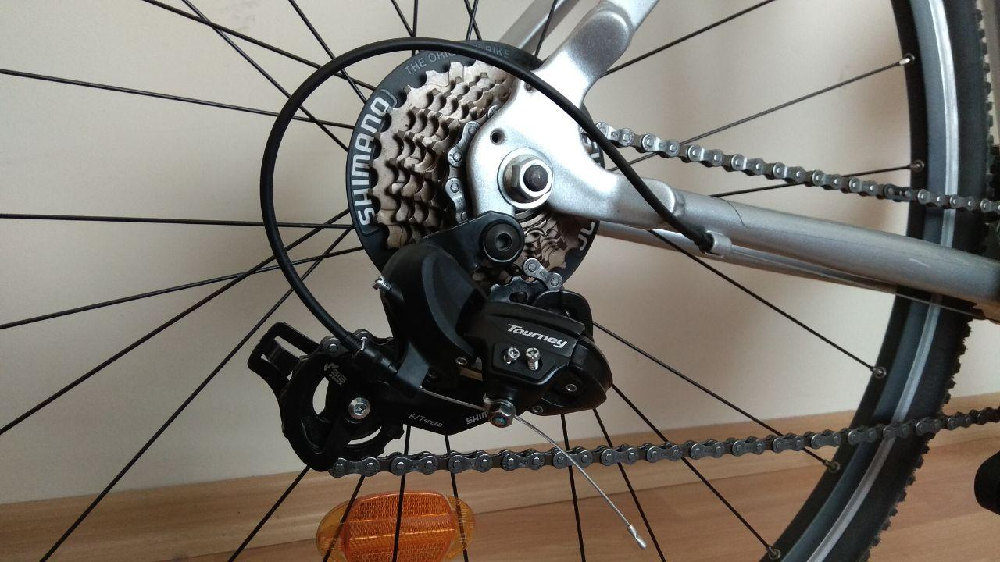
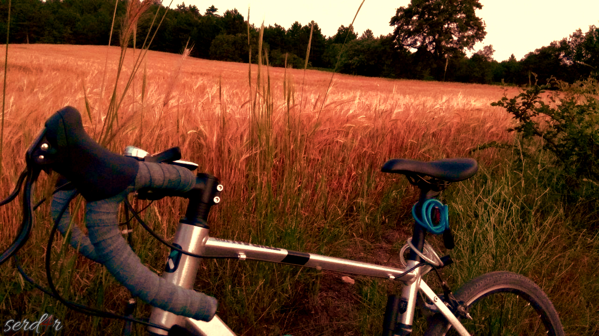

Bisikletimi Nasıl Yükselttim : Triban100
27/03/2018 tarihinde, decathlon üzerinden yol bisikletleri hatta bisiklet hakkında hiçbir teknik bilgim olmadan en alt model trian100’ü aldım.O zamanki fiyatı 1.199.99₺ imiş 😃 tabi gel zaman git zaman şu anda fiyatı 3.000₺ ye kadar fırlamış💲💲💲

Bir ürün alırken maalesef hemen herkes aynı yanılgıya düşüyor teknik bilgiden uzak olduğumuzu kabul edip araştırmıyoruz da sanki her şeyden haberdarmışız gibi en ucuzuna atlıyoruz.Tabi bazı şeyler tecrübe edilerek öğreniliyor orası ayrı mevzu.
Her neyse oturduğum yer şehir merkezinden yaklaşık 2km mesafede ve yol üzerinde 700m’lik arabaları dahi zorlayan dik bir yokuş var.Bisiklet, 48 diş tek yaprak aynakol ve arkada megarange dişli bulunan 7’li ruble ile geliyor.Anlayacağınız bisiklet 7 vites ve orta dişli yokuş tırmanmak için kesinlikle uygun değil.Yaklaşık 1 sene bu şekilde kullandıktan sonra bu böyle yürümez diyerek araştırmalara başladım.Kararımı verdim bisikleti parçalayıp uygun vites ve diğer malzemeler ile tekrar toplayıp 3x7 - 21 vites yapacağım.
İlk önce hangi parçalara ihtiyacım var bunları Shimano’nun sitesindeki uyumluluk tablosundan bakarak liste yaptım(📎):

▪ Aynakol çektirme anahtarı.(📎)
▪ Bike Hand Zincir Sökme Aparatı YC-327
▪ Ruble sökme anahtarı.(📎)
▪ Shimano FC-TY501 3’lü Ön Aynakol Dişli 42T, 48T Sağ Sol Takım
▪ Shimano FDTY510 ÖN VİTES AKTARICI 48T UYUMLU
▪ Shimano Vites Kolu Tourney SL-TX50 7S Sağ
▪ Shimano Vites Kolu Tourney SL-TX50 3S Sol
▪ Shimano ZİNCİR CN-HG40 8/7/6 VİTES UYUMLU
▪ Shimano bb-un26 Orta Yatak Kaset 122.5mm(📎)
▪ RULMANLI(MONOBLOCK) ORTA GÖBEK SÖKME ANAHTARI
{kind=link}
{kind=link}
{kind=link}
Bütün bunlar bana aşağı yukarı 700₺’ye patladı.Bunlar dışında sağlam büyük boy bir ingiliz anahtarı ve birkaç parça anahtar takımına ihtiyaç var.Ayrıca aynakol dişlisini sökmek epey bir güç gerektiriyor.
Aynakol Söküm İşlemi :
Göbekten de saçma sapan sesler geldiği için değiştirmeye karar verdim.Bisiklet üzerinde gelen dandik göbek bu (VP-BC73 : 📎) Bunu SHIMANO BB-UN26 ile değiştirdim.
{kind=link}

Kolları sıvadım ve işe koyuldum.Birkaç hafta tatilimi bisiklete ayırdım ama bitiremedim.Söktüm parçaladım ama ne fayda… Bir yandan internetten ne nasıl yapılır video, paylaşım kovalıyorum, bir yandan iş güç… 1 ay bu şekilde bisikletle uğraşarak geçti 😆 ve sonunda topladım.

Gidon bantları abartı şekilde pahalı olduğu ve uzun ömürlü olmadıklarını bildiğim için eski bir kot pantolonunu keserek gidona sardım.Fena da olmadı hani 😏

Vitesler çok şekil oldu 😆

Vites ayarları çok ince işçilik istiyor…Aksi halde çatır çutur sesler geliyor ve vites geçişleri sıkıntı yaratıyor.Hassas olmak lazım!

Youtube’da vites ayarları ile ilgili birçok video mevcut.


Şimdilik 1150 km’yi geride bıraktık.Aynakol değişimi tırmanış kolaylığında ciddi şekilde fark ettiriyor.Bu haliyle uzun yol tur bile yapılabilir.Şu anda internetteki sıfır satış fiyatı 3000₺.
